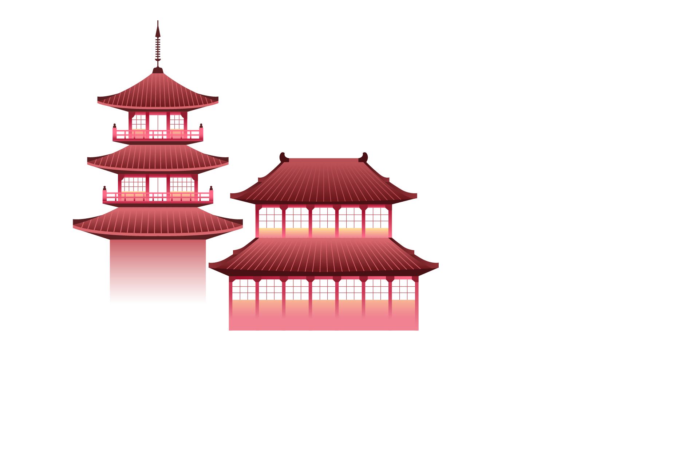
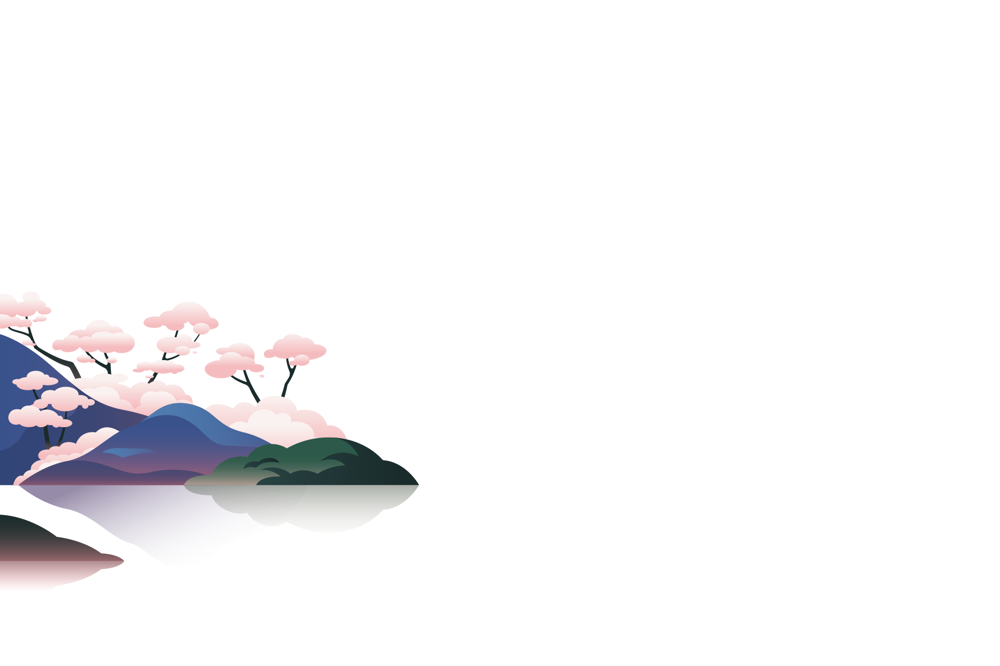
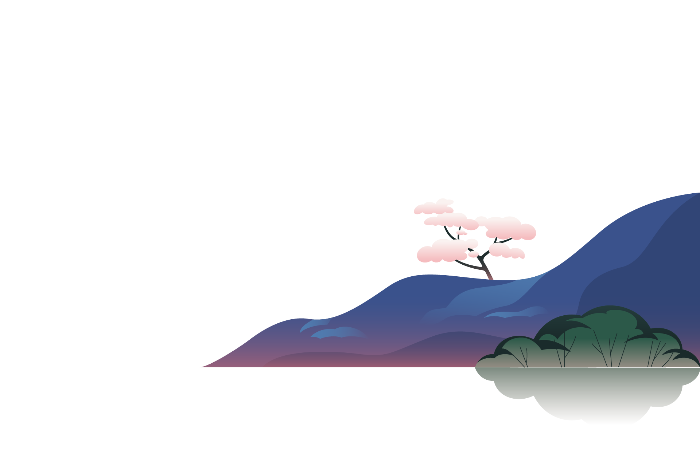
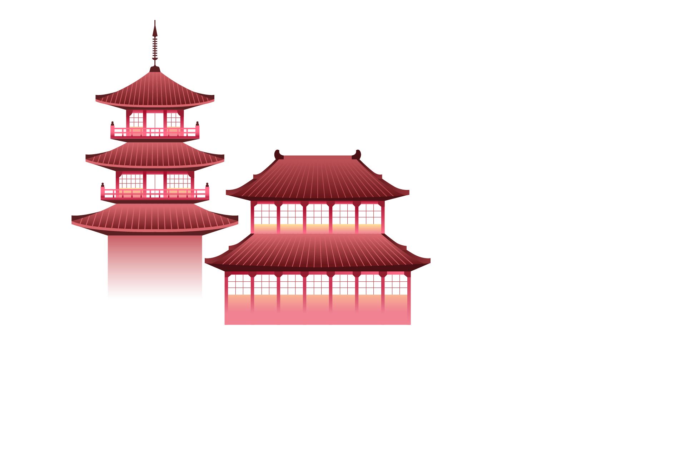
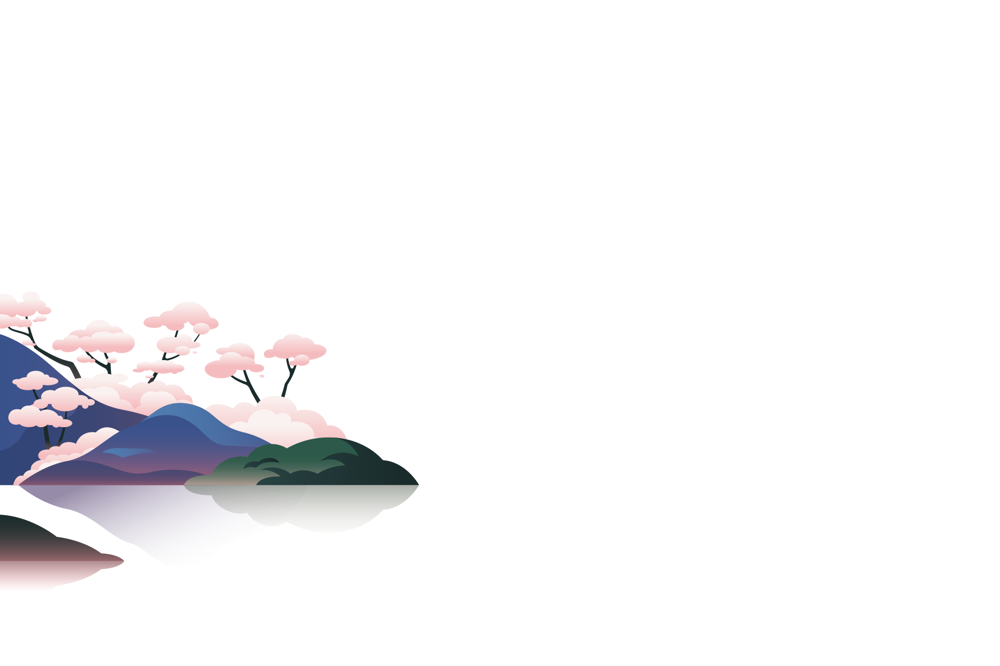
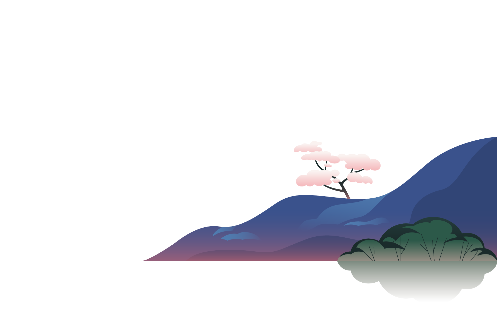

Japan Uncovered: Authentic Travel Guide
About
Japan Uncovered is an informative website developed by a group of four Japan enthusiasts named Japan Gurus to assist aspiring Japan travellers in discovering and learning the magnificence of Japan. It is created as an online educational platform offering the golden opportunity for visitors to view and explore some of Japan's most stunning scenery. Thus, the website endeavours to provide as many breathtaking photographs as possible and summarized information about a range of locales in Japan, from renowned tourist attractions to unexplored jewels.
To this end, the website does not incorporate any functions that entail booking, scheduling flights, organizing itineraries, or purchasing tour packages. As the group's responsibility in designing the website, the primary goal shall remain to create a visually appealing and informative design which only includes carefully researched and collected information on a variety of tourist attractions that the group have chosen to feature on the site.
Goals
Showcase captivating tourist landmarks around the Japan's eight distinct regions.
Provide vivid descriptions on Japan premier must-see destinations.
Collect feedback on visitors' satisfaction regarding the website.
Outline
Disclaimer: This website is created for education and non-commercial use only. It is an assignment for completion of unit, FST10011 Web and Cloud Technologies for Foundation course from Swinburne University of Technology Sarawak Campus.